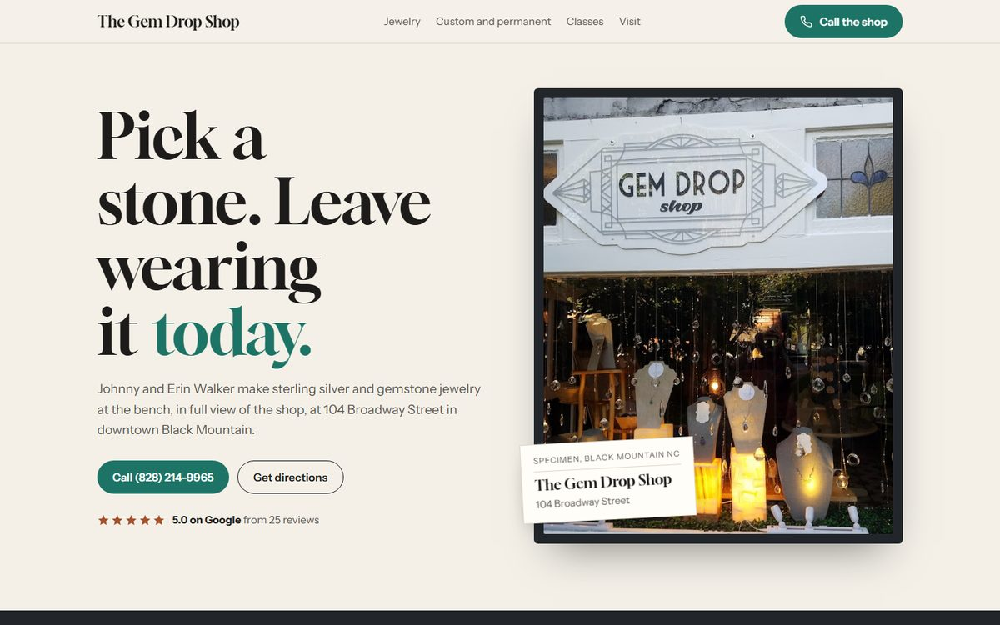
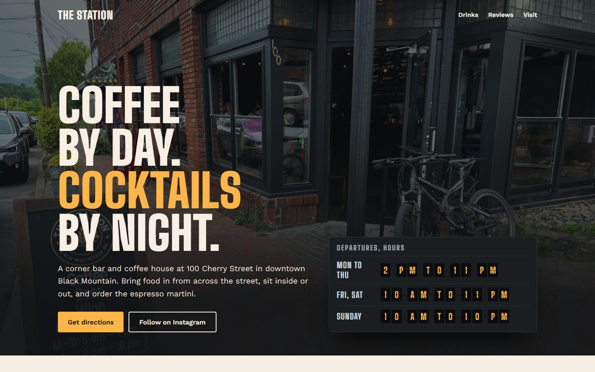
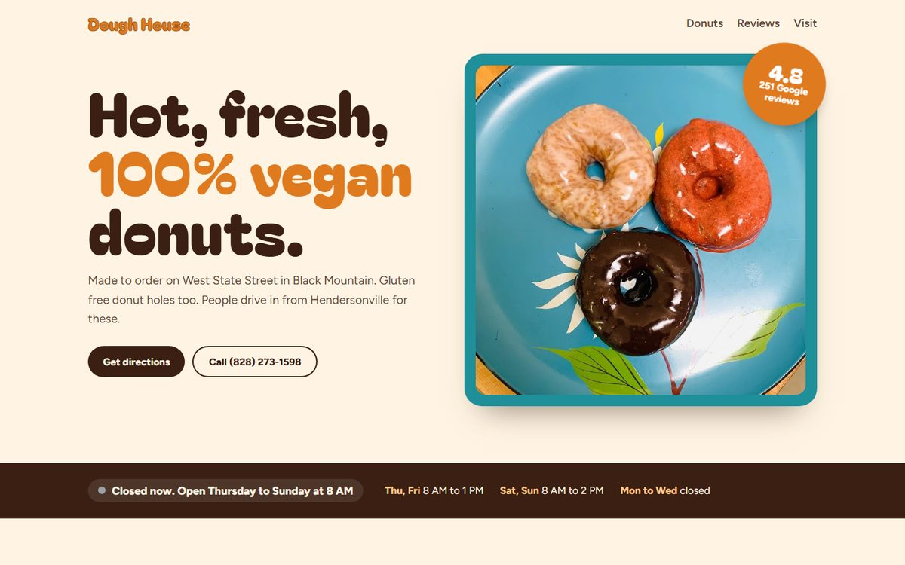
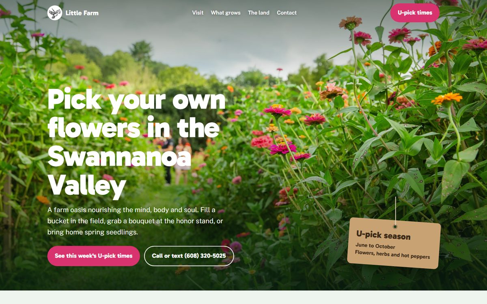
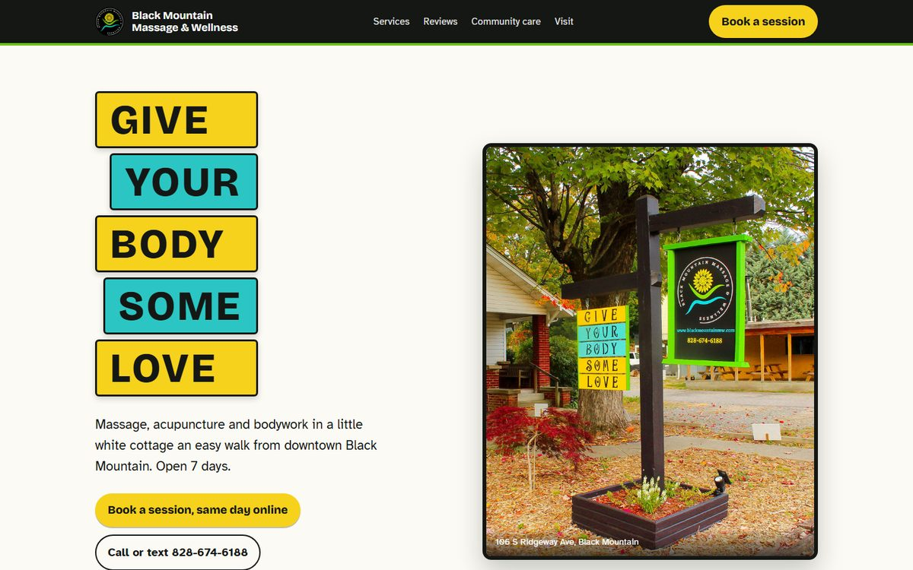
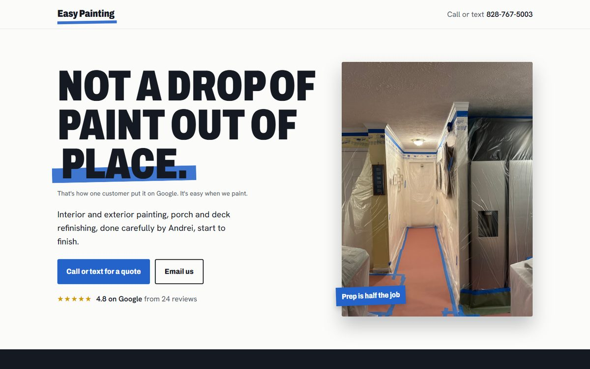
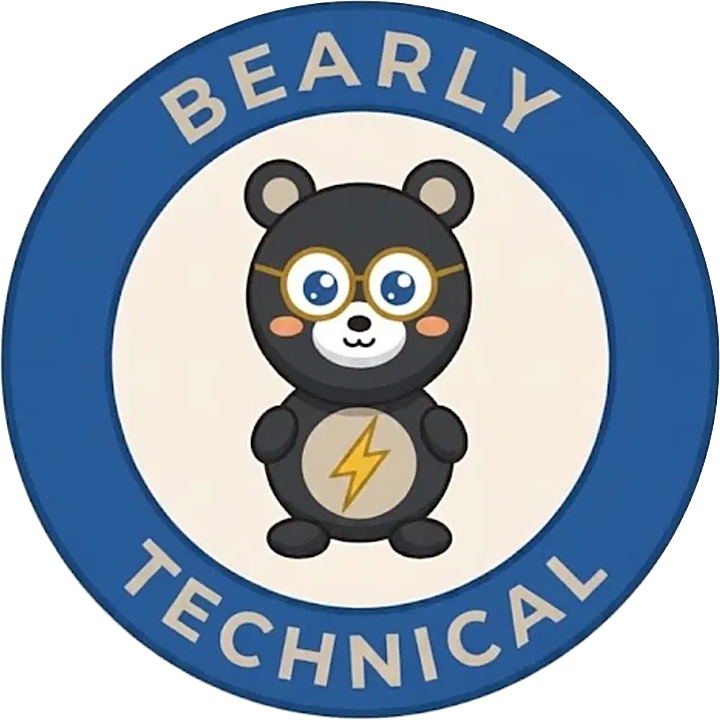

Small businesses.
Big change.
A launchpad for the people who keep this valley alive.
Start it, streamline it, and connect it to the rest of town. From a first idea to a full calendar, with grant help for the nonprofits and churches doing the heavy lifting.
Three ways in
Wherever you are, there is a next step. Every one starts with a free conversation.
Launch a business
From idea to open sign: name and brand, legal and money setup, a website, payments, first customers. Streamlined, with someone beside you the whole way.
The Launchpad → Already openGrow and streamline
Get found on Google, take bookings and payments online, cut the busywork with simple systems and AI helpers, and keep customers coming back.
All services → Doing goodNonprofits and churches
Free grant readiness reports, applications written with you, volunteer sign-ups and giving pages, at community rates. Never a percentage of a grant.
Grant Guru →Field notes
Not promises. Things already done.
- 113preview websites built for Black Mountain and Swannanoa Valley businesses, nonprofits and churches this October.Each one made from that place's own Google photos and reviews.
- 77free grant readiness reports for valley nonprofits and churches.Funders checked against their own sources, with the right person to talk to.
- 10,000+servings of free herbal medicine carried by a nonprofit bus across 13 states.Served on its board, too.
- 2+years on a nonprofit board, plus work on several grant committees.Where Grant Guru was born.
- 10,000+hours volunteered for nonprofits over a lifetime, being the change.From elephant protection and sea turtle conservation to orphaned dogs in Mexico. Read the story
- 3,000+pounds of food distributed with local organizations.Plus food forests started to grow free food for the people who need it.
- 48US states traveled, plus Nepal, Japan, Dubai, Mexico and much of Europe.Every state but Rhode Island and Alaska.
One valley, wired together
A town is stronger when its businesses know each other. The bakery sends customers to the bookshop. The church borrows the farm's tables. Bearly Technical is building that web on purpose: referrals, shared events, and a valley directory where every light can find the others.
See the networkBuilt by hand, for neighbors
Each site gets its own world. Tap one to walk around in it.







Bearly technical. Wholly human.
The internet is loud. Your work is quiet, and good. We just turn the porch light on.
Not a tech company. A neighbor with a laptop who has worked alongside small organizations around the world, and who will sit at your counter and learn your story first.
Local businesses and startups get 50% off. Small local startups get 75% off.